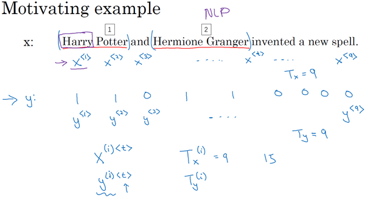

循环序列模型
Table of Contents
为什么选择序列模型？
接下来将学会序列模型，它是深度学习中最令人激动的内容之一
循环神经网络 RNN 之类的模型在语音识别、自然语言处理和其他领域中引起变革。先看一些例子，这些例子都有效使用了序列模型：

在进行 语音识别 时，给定了一个输入音频片段 \(X\) ，并要求输出对应的文字记录 \(Y\) 。这个例子里输入和输出数据都是序列模型，因为\(X\) 是一个按时播放的音频片段，输出\(Y\) 是一系列单词
之后将要学到的一些序列模型，如循环神经网络等等在语音识别方面是非常有用的- 音乐生成 问题是使用序列数据的另一个例子，在这个例子中，只有输出数据 \(Y\) 是序列，而输入数据可以是空集，也可以是个单一的整数，这个数可能指代想要生成的音乐风格，也可能是想要生成的那首曲子的头几个音符。输入的\(X\) 可以是空的，或者就是个数字，然后输出序列\(Y\)
在处理 情感分类 时，输入数据 \(X\) 是序列
类似这样的输入：“There is nothing to like in this movie.”， 你认为这句评论对应几星？序列模型在 DNA序列分析 中也十分有用
DNA可以用A、C、G、T四个字母来表示 给定一段DNA序列，能够标记出哪部分是匹配某种蛋白质的吗？
在 机器翻译 过程中
会得到这样的输入句：“Voulez-vou chante avecmoi?”（法语：要和我一起唱么？） 然后要求你输出另一种语言的翻译结果- 在进行 视频行为识别 时，可能会得到一系列视频帧，然后要求你识别其中的行为
- 在进行 命名实体识别 时，可能会给定一个句子要你识别出句中的人名
所有这些问题都可以被称作使用 标签数据 \((X, Y)\) 作为训练集的监督学习。但从这一系列例子中可以看出序列问题有很多不同类型。有些问题里，输入数据 \(X\) 和输出数据 \(Y\) 都是序列，但就算在那种情况下，\(X\) 和 \(Y\) 有时也会不一样长。或者像上图编号1所示和上图编号2的 \(X\) 和 \(Y\) 有相同的数据长度。在另一些问题里，只有 \(X\) 或者只有 \(Y\) 是序列
数学符号
比如说想要建立一个序列模型，它的输入语句是这样的：“Harry Potter and Herminoe Granger invented a new spell.”
这些人名都是出自于J.K.Rowling笔下的系列小说Harry Potter
这就是一个命名实体识别问题，这常用于搜索引擎
比如说索引过去24小时内所有新闻报道提及的人名,用这种方式就能够恰当地进行索引
命名实体识别系统可以用来查找不同类型的文本中的人名、公司名、时间、地点、国家名和货币名等等

现在给定这样的输入数据 \(x\) ，假如想要一个序列模型输出 \(y\) ，使得输入的每个单词都对应一个输出值，同时这个 \(y\) 能够表明输入的单词是否是人名的一部分
技术上来说这也许不是最好的输出形式，还有更加复杂的输出形式
它不仅能够表明输入词是否是人名的一部分，它还能够告诉你这个人名在这个句子里从哪里开始到哪里结束
比如Harry Potter（上图编号1所示）、Hermione Granger（上图标号2所示）
这个输入数据是9个单词组成的序列，所以最终会有9个特征集和来表示这9个单词，并按序列中的位置进行索引 \(x^{<1>}\) , \(x^{<2>}\) , \(x^{<3>}\) 等等一直到 \(x^{<9>}\) 来索引不同的位置，将用 \(x^{<\text{t}>}\) 来索引这个序列的中间位置。意味着它们是时序序列，但不论是否是时序序列，都将用 \(t\) 来索引序列中的位置
输出数据也是一样，还是用 \(y^{<1>}\) , \(y^{<2>}\) , \(y^{<3>}\) 等等一直到 \(y^{<9>}\) 来表示输出数据。同时 \(T_x\) 用来表示输入序列的 长度 ，这个例子中输入是9个单词，所以 \(T_x = 9\) 。\(T_y\) 用来表示输出序列的长度。在这个例子里 \(T_x = T_y\) ，当然两者可以有不同的值
之前 \(x^{(i)}\) 用来表示第 \(i\) 个训练样本，所以为了指代第 \(t\) 个元素，或者说是训练样本 \(i\) 的序列中第 \(t\) 个元素用 \(x^{(i)<\text{t}>}\) 这个符号来表示。如果 \(T_x\) 是序列长度，那么训练集里不同的训练样本就会有不同的长度，所以 \(T_x^{(i)}\) 就代表第 \(i\) 个训练样本的输入序列长度。同样 \(y^{(i)<\text{t}>}\) 代表第 \(i\) 个训练样本中第 \(t\) 个元素， \(T_y^{(i)}\) 就是第 \(i\) 个训练样本的输出序列的长度 。在这个例子中， \(T_x^{(i)} = 9\) ，但如果另一个样本是由15个单词组成的句子，那么对于这个训练样本 \(T_x^{(i)} = 15\)
词典
既然这个例子是NLP，也就是自然语言处理，这是初次涉足自然语言处理
一件需要事先决定的事是怎样表示一个序列里单独的单词，你会怎样表示像Harry这样的单词，实际 x^{<1>} 应该是什么？
想要表示一个句子里的单词，第一件事是做一张词表，有时也称为词典，意思是列一列表示方法中用到的单词。这个词表（下图所示）中的第一个词是 a ，也就是说词典中的第一个单词是a，第二个单词是 Aaron ，然后更下面一些是单词 and ，再后面会找到 Harry ，然后找到 Potter ，这样一直到最后，词典里最后一个单词可能是 Zulu

因此a是第 1 个单词， Aaron是第 2 个单词，在这个词典里，and出现在 367 这个位置上，Harry是在 4075 这个位置，Potter在 6830 ，词典里的最后一个单词Zulu可能是第 10,000 个单词。所以在这个例子中用了10,000个单词大小的词典，这对现代自然语言处理应用来说太小了
对于商业应用来说，或者对于一般规模的商业应用来说30,000到50,000词大小的词典比较常见，但是100,000词的也不是没有
有些大型互联网公司会用百万词，甚至更大的词典
不过这里将用10,000词大小的词典做说明，因为这是一个很好用的整数
如果选定了10,000词的词典，构建这个词典的一个方法是遍历训练集，并且找到前10,000个常用词，也可以去浏览一些网络词典，它能告诉你英语里最常用的10,000个单词，接下来可以用 one-hot 表示法来表示词典里的每个单词

- 在这里 \(x^{<1>}\) 表示 Harry 这个单词，它就是一个第 4075 行是1，其余值都是0的向量（上图编号1所示），因为那是Harry在这个词典里的位置
- 同样 \(x^{<2>}\) 是个第 6830行 是1，其余位置都是0的向量（上图编号2所示）
- and在词典里排第367，所以 \(x^{<3>}\) 就是第 367行 是1，其余值都是0的向量（上图编号3所示）
- 因为a是字典第一个单词，\(x^{<7>}\) 对应a，那么这个向量的第 1 个位置为1，其余位置都是0的向量（上图编号4所示）
如果词典大小是10,000的话，那么这里的每个向量都是10,000维的
所以这种表示方法中， \(x^{<\text{t}>}\) 指代句子里的任意词，它就是个 one-hot 向量，因为它只有一个值是1，其余值都是0，所以会有9个one-hot向量来表示这个句中的9个单词。这样就能在序列模型 \(X\) 和目标输出 \(Y\) 之间学习建立一个映射。可以把它当作监督学习的问题，给定带有 \((x, y)\) 的标签的数据
如果遇到了一个不在词表中的单词？
答案就是创建一个新的标记，也就是一个叫做Unknow Word的伪造单词，用<UNK>作为标记，来表示不在词表中的单词